CODING AGENTS AS PIXEL WORLD MODELS
traex/DeepSeek-V4.1-Flash · 0139
点击播放 · 原生 RGB 像素
逐轮保存的候选
回放视频、检查图与代码变化。
每份候选均可单独播放。实际图片检查记录在下方工具轨迹中。
候选 01播放与检查图
点击播放 · 原生 RGB 像素

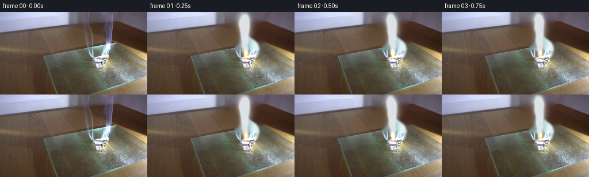
展开代码变化
--- 上一保存版本 +++ 本次保存版本 @@ -0,0 +1,213 @@ +from pathlib import Path + +import cv2 +import numpy as np +from PIL import Image +from scipy.ndimage import gaussian_filter, map_coordinates + +import artifact_io + + +CASE_DIR = Path(__file__).resolve().parent +WIDTH, HEIGHT = 256, 144 +FRAME_COUNT = 20 +FPS = 4 + + +def make_clean_plate(source): + """Remove the frozen plume while preserving the table, glass and paper.""" + mask = np.zeros((HEIGHT, WIDTH), np.uint8) + smoke_shape = np.array( + [ + [136, 0], + [198, 0], + [198, 36], + [203, 52], + [202, 66], + [194, 78], + [184, 80], + [177, 76], + [169, 74], + [161, 68], + [151, 62], + [143, 43], + ], + np.int32, + ) + cv2.fillPoly(mask, [smoke_shape], 255) + # The paper itself is sharp and must not be reconstructed by the inpainter. + paper = np.array([[158, 67], [187, 65], [188, 92], [158, 92]], np.int32) + cv2.fillPoly(mask, [paper], 0) + clean = cv2.inpaint(source, mask, 5, cv2.INPAINT_TELEA) + + # A very soft join hides any color discontinuity left by the inpaint pass. + feather = gaussian_filter(mask.astype(np.float32) / 255.0, 1.2) + feather = np.clip(feather * 1.6, 0.0, 1.0)[..., None] + return (clean.astype(np.float32) * feather + source.astype(np.float32) * (1.0 - feather)).astype( + np.uint8 + ) + + +def make_noise(seed, size=384): + rng = np.random.default_rng(seed) + field = gaussian_filter(rng.normal(size=(size, size)).astype(np.float32), 1.4) + field = (field - field.min()) / (field.max() - field.min()) + return field + + +def sample(field, x, y): + return map_coordinates(field, [y, x], order=1, mode="reflect") + + +def render_smoke(time_s, clean): + yy, xx = np.mgrid[0:HEIGHT, 0:WIDTH].astype(np.float32) + + # The plume leans gently left in the upper half, as it does in the source. + center = 171.5 - 4.6 * np.clip((72.0 - yy) / 72.0, 0.0, 1.0) + center += 2.3 * np.sin(yy * 0.085 - time_s * 1.9) + center += 1.2 * np.sin(yy * 0.17 + time_s * 2.7 + 0.8) + + # Width grows from the small source to a diffuse plume near the top. + height_above_source = np.clip(72.0 - yy, 0.0, 72.0) + width = 2.3 + height_above_source * 0.100 + width *= 1.0 + 0.18 * np.sin(yy * 0.055 - time_s * 1.3) + envelope = np.exp(-0.5 * ((xx - center) / width) ** 2) + envelope *= np.clip((yy - 1.0) / 12.0, 0.0, 1.0) + envelope *= np.clip((79.0 - yy) / 7.0, 0.0, 1.0) + + # Advect a static fine texture upward. Sampling a fixed field makes the + # wisps evolve continuously instead of shimmering from frame to frame. + rise = 16.5 * time_s + shear = -2.0 * time_s * np.clip((72.0 - yy) / 72.0, 0.0, 1.0) + nx = xx * 0.090 + 0.55 * np.sin(yy * 0.12 + time_s * 1.4) + shear + ny = (yy + rise) * 0.085 + 0.32 * np.sin(xx * 0.16 - time_s * 1.8) + fine = sample(SMOKE_NOISE_A, nx, ny) + broad = sample(SMOKE_NOISE_B, nx * 0.42 + 3.0, ny * 0.40 + 5.0) + texture = np.clip(0.20 + 0.90 * fine + 0.42 * broad, 0.0, 1.0) + texture = texture ** 1.15 + + density = envelope * texture + density *= 0.80 + + # Discrete, slowly curling puffs add the irregular edge structure that a + # single noise field lacks. Their paths are deterministic in time. + rng = np.random.default_rng(139) + puffs = np.zeros_like(density) + period = 4.7 + for i in range(86): + birth = -period * rng.random() + age = (time_s - birth) % period + if age > 4.25: + continue + x0 = 170.5 + rng.normal(0.0, 1.7) + phase = rng.uniform(0.0, 2.0 * np.pi) + sway = rng.uniform(1.2, 4.0) + x = x0 - 0.75 * age + sway * np.sin(age * rng.uniform(1.0, 1.8) + phase) + x += 1.1 * np.sin(age * 3.1 + phase) + y = 72.0 - 15.2 * age - 0.65 * age * age + rng.normal(0.0, 1.0) + rx = 0.75 + 0.75 * age + rng.uniform(0.0, 1.4) + ry = 1.25 + 1.10 * age + rng.uniform(0.0, 2.1) + alpha = (0.12 + rng.uniform(0.02, 0.12)) * np.clip((4.25 - age) / 1.0, 0.0, 1.0) + xlo, xhi = max(0, int(x - 3 * rx)), min(WIDTH, int(x + 3 * rx) + 1) + ylo, yhi = max(0, int(y - 3 * ry)), min(HEIGHT, int(y + 3 * ry) + 1) + if xlo >= xhi or ylo >= yhi: + continue + py, px = np.mgrid[ylo:yhi, xlo:xhi].astype(np.float32) + puffs[ylo:yhi, xlo:xhi] += alpha * np.exp( + -0.5 * (((px - x) / rx) ** 2 + ((py - y) / ry) ** 2) + ) + + density += puffs + density = gaussian_filter(density, 0.65) + density = np.clip(density, 0.0, 0.95) + + smoke_rgb = np.array([226.0, 232.0, 236.0], np.float32) + result = clean.astype(np.float32) * (1.0 - density[..., None]) + result += smoke_rgb * density[..., None] + + # A small, cool translucent halo keeps the smoke from looking pasted on. + halo = gaussian_filter(density, 3.2) + result += np.array([8.0, 10.0, 11.0], np.float32) * np.clip(halo, 0.0, 0.18)[..., None] + return np.clip(result, 0.0, 255.0) + + +def add_fire_and_char(frame, time_s): + image = frame.copy() + yy, xx = np.mgrid[0:HEIGHT, 0:WIDTH].astype(np.float32) + + # The fold darkens and warms very gradually over the five seconds. + char_mask = np.exp( + -0.5 * (((xx - 171.0) / 7.0) ** 2 + ((yy - 72.0) / 5.2) ** 2) + ) + char_mask *= np.clip((93.0 - yy) / 5.0, 0.0, 1.0) + amount = 0.035 + 0.017 * time_s + image *= 1.0 - amount * char_mask[..., None] + image += np.array([14.0, 7.0, 1.0], np.float32) * (amount * char_mask)[..., None] + + flicker = 0.76 + 0.14 * np.sin(time_s * 14.0) + 0.08 * np.sin(time_s * 23.0 + 0.4) + glow = np.exp( + -0.5 * (((xx - 171.0) / 4.0) ** 2 + ((yy - 75.0) / 4.6) ** 2) + ) + glow *= flicker + image += np.array([93.0, 43.0, 10.0], np.float32) * glow[..., None] + + # A compact orange-white flame sits at the top edge of the folded paper. + flame = np.zeros((HEIGHT, WIDTH), np.float32) + tongues = ( + (171.2, 74.0, 1.5, 4.0, 1.00), + (169.0, 73.1, 1.0, 3.2, 0.55), + (173.3, 73.5, 0.9, 3.0, 0.48), + ) + for fx, fy, rx, ry, strength in tongues: + wobble = 0.8 * np.sin(time_s * 17.0 + fx) + flame += strength * np.exp( + -0.5 * (((xx - (fx + wobble)) / rx) ** 2 + ((yy - fy) / ry) ** 2) + ) + flame = np.clip(flame * flicker, 0.0, 1.5) + image += np.array([244.0, 139.0, 42.0], np.float32) * np.clip(flame, 0.0, 1.0)[..., None] + hot = np.clip(flame - 0.72, 0.0, 0.8) + image += np.array([255.0, 219.0, 150.0], np.float32) * hot[..., None] + return np.clip(image, 0.0, 255.0) + + +def subtle_heat_shimmer(frame, time_s): + yy, xx = np.mgrid[0:HEIGHT, 0:WIDTH].astype(np.float32) + influence = np.exp(-0.5 * (((xx - 172.0) / 9.0) ** 2 + ((yy - 58.0) / 18.0) ** 2)) + dx = 0.30 * np.sin(yy * 0.42 + time_s * 8.3) * influence + dy = 0.12 * np.sin(xx * 0.35 - time_s * 6.7) * influence + return cv2.remap( + frame, + xx + dx, + yy + dy, + interpolation=cv2.INTER_LINEAR, + borderMode=cv2.BORDER_REFLECT, + ) + + +SMOKE_NOISE_A = make_noise(11) +SMOKE_NOISE_B = make_noise(29) + + +def generate(): + source_bgr = cv2.imread(str(CASE_DIR / "first_frame.png"), cv2.IMREAD_COLOR) + source = cv2.cvtColor(source_bgr, cv2.COLOR_BGR2RGB) + clean = make_clean_plate(source) + + frames = [] + for index in range(FRAME_COUNT): + if index == 0: + frames.append(source.copy()) + continue + time_s = index / FPS + frame = render_smoke(time_s, clean) + frame = add_fire_and_char(frame, time_s) + frame = subtle_heat_shimmer(frame, time_s) + frames.append(np.clip(frame + 0.5, 0.0, 255.0).astype(np.uint8)) + + frames = np.stack(frames) + assert np.array_equal(frames[0], source) + artifact_io.save(frames, CASE_DIR) + + +if __name__ == "__main__": + generate()
候选 02播放与检查图
点击播放 · 原生 RGB 像素
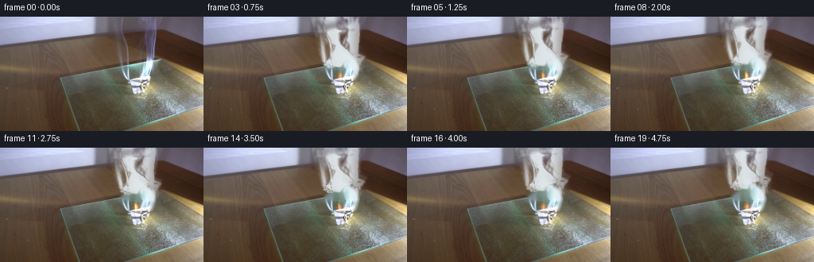
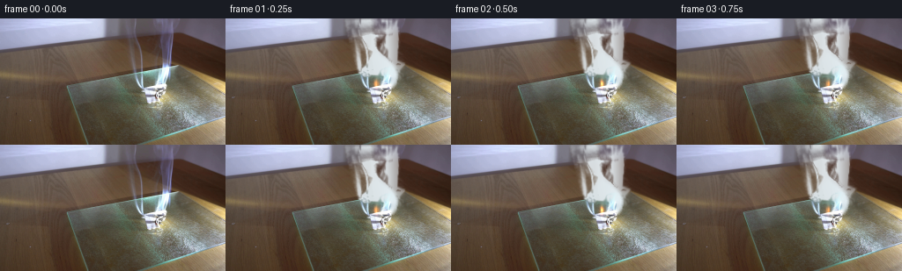
展开代码变化
--- 上一保存版本
+++ 本次保存版本
@@ -55,79 +55,60 @@
return field
+def make_smoke_sprite(source, clean):
+ """Extract the plume's translucent silhouette from the source image."""
+ difference = np.linalg.norm(source.astype(np.float32) - clean.astype(np.float32), axis=2)
+ yy, xx = np.mgrid[0:HEIGHT, 0:WIDTH].astype(np.float32)
+ alpha = np.clip((difference - 1.2) / 38.0, 0.0, 1.0)
+ alpha *= np.clip((80.0 - yy) / 8.0, 0.0, 1.0)
+ alpha *= np.clip((yy + 1.0) / 4.0, 0.0, 1.0)
+ alpha *= np.exp(-0.5 * ((xx - 168.0) / 26.0) ** 2)
+ alpha = gaussian_filter(alpha, 0.45)
+ return np.clip(alpha, 0.0, 1.0).astype(np.float32)
+
+
def sample(field, x, y):
return map_coordinates(field, [y, x], order=1, mode="reflect")
-def render_smoke(time_s, clean):
+def render_smoke(time_s, clean, sprite):
yy, xx = np.mgrid[0:HEIGHT, 0:WIDTH].astype(np.float32)
- # The plume leans gently left in the upper half, as it does in the source.
- center = 171.5 - 4.6 * np.clip((72.0 - yy) / 72.0, 0.0, 1.0)
- center += 2.3 * np.sin(yy * 0.085 - time_s * 1.9)
- center += 1.2 * np.sin(yy * 0.17 + time_s * 2.7 + 0.8)
+ # Deform the photographed plume rather than redrawing its silhouette.
+ # The displacement grows with height, creating a slow rising draught.
+ height = np.clip((73.0 - yy) / 73.0, 0.0, 1.0)
+ sx = xx + 0.85 * np.sin(yy * 0.11 + time_s * 2.0) * (0.3 + height)
+ sx += 0.25 * time_s + 0.9 * height * np.sin(time_s * 0.75 + 0.3)
+ sy = yy + 2.8 * time_s + 0.65 * np.sin(xx * 0.13 - time_s * 1.6) * height
+ photographed = sample(sprite, sx, sy)
- # Width grows from the small source to a diffuse plume near the top.
- height_above_source = np.clip(72.0 - yy, 0.0, 72.0)
- width = 2.3 + height_above_source * 0.100
- width *= 1.0 + 0.18 * np.sin(yy * 0.055 - time_s * 1.3)
+ sx2 = xx + 1.05 * np.sin(yy * 0.10 - time_s * 1.7 + 1.4)
+ sx2 -= 0.35 * time_s
+ sy2 = yy + 4.2 * time_s + 0.5 * np.sin(xx * 0.11 + time_s * 1.2)
+ secondary = sample(sprite, sx2, sy2)
+ density = np.clip(photographed * 0.82 + secondary * 0.25, 0.0, 0.92)
+
+ # Fine fresh wisps emerge from the ember and keep the bottom from looking
+ # like a moving still image.
+ center = 171.2 - 1.7 * height + 0.9 * np.sin(yy * 0.14 - time_s * 2.2)
+ width = 1.5 + 2.0 * height
envelope = np.exp(-0.5 * ((xx - center) / width) ** 2)
- envelope *= np.clip((yy - 1.0) / 12.0, 0.0, 1.0)
- envelope *= np.clip((79.0 - yy) / 7.0, 0.0, 1.0)
+ envelope *= np.clip((75.0 - yy) / 9.0, 0.0, 1.0)
+ nx = xx * 0.11 + 0.55 * np.sin(yy * 0.16 + time_s * 1.8)
+ ny = (yy + 9.0 * time_s) * 0.10 + 0.3 * np.sin(xx * 0.18 - time_s)
+ fine = sample(SMOKE_NOISE_A, nx, ny)
+ broad = sample(SMOKE_NOISE_B, nx * 0.55 + 2.0, ny * 0.52 + 4.0)
+ wisp_texture = np.clip(0.12 + 0.72 * fine + 0.34 * broad, 0.0, 1.0) ** 1.6
+ density += 0.22 * envelope * wisp_texture
+ density = np.clip(gaussian_filter(density, 0.32), 0.0, 0.95)
- # Advect a static fine texture upward. Sampling a fixed field makes the
- # wisps evolve continuously instead of shimmering from frame to frame.
- rise = 16.5 * time_s
- shear = -2.0 * time_s * np.clip((72.0 - yy) / 72.0, 0.0, 1.0)
- nx = xx * 0.090 + 0.55 * np.sin(yy * 0.12 + time_s * 1.4) + shear
- ny = (yy + rise) * 0.085 + 0.32 * np.sin(xx * 0.16 - time_s * 1.8)
- fine = sample(SMOKE_NOISE_A, nx, ny)
- broad = sample(SMOKE_NOISE_B, nx * 0.42 + 3.0, ny * 0.40 + 5.0)
- texture = np.clip(0.20 + 0.90 * fine + 0.42 * broad, 0.0, 1.0)
- texture = texture ** 1.15
-
- density = envelope * texture
- density *= 0.80
-
- # Discrete, slowly curling puffs add the irregular edge structure that a
- # single noise field lacks. Their paths are deterministic in time.
- rng = np.random.default_rng(139)
- puffs = np.zeros_like(density)
- period = 4.7
- for i in range(86):
- birth = -period * rng.random()
- age = (time_s - birth) % period
- if age > 4.25:
- continue
- x0 = 170.5 + rng.normal(0.0, 1.7)
- phase = rng.uniform(0.0, 2.0 * np.pi)
- sway = rng.uniform(1.2, 4.0)
- x = x0 - 0.75 * age + sway * np.sin(age * rng.uniform(1.0, 1.8) + phase)
- x += 1.1 * np.sin(age * 3.1 + phase)
- y = 72.0 - 15.2 * age - 0.65 * age * age + rng.normal(0.0, 1.0)
- rx = 0.75 + 0.75 * age + rng.uniform(0.0, 1.4)
- ry = 1.25 + 1.10 * age + rng.uniform(0.0, 2.1)
- alpha = (0.12 + rng.uniform(0.02, 0.12)) * np.clip((4.25 - age) / 1.0, 0.0, 1.0)
- xlo, xhi = max(0, int(x - 3 * rx)), min(WIDTH, int(x + 3 * rx) + 1)
- ylo, yhi = max(0, int(y - 3 * ry)), min(HEIGHT, int(y + 3 * ry) + 1)
- if xlo >= xhi or ylo >= yhi:
- continue
- py, px = np.mgrid[ylo:yhi, xlo:xhi].astype(np.float32)
- puffs[ylo:yhi, xlo:xhi] += alpha * np.exp(
- -0.5 * (((px - x) / rx) ** 2 + ((py - y) / ry) ** 2)
- )
-
- density += puffs
- density = gaussian_filter(density, 0.65)
- density = np.clip(density, 0.0, 0.95)
-
- smoke_rgb = np.array([226.0, 232.0, 236.0], np.float32)
+ smoke_rgb = np.array([225.0, 232.0, 236.0], np.float32)
result = clean.astype(np.float32) * (1.0 - density[..., None])
result += smoke_rgb * density[..., None]
# A small, cool translucent halo keeps the smoke from looking pasted on.
- halo = gaussian_filter(density, 3.2)
- result += np.array([8.0, 10.0, 11.0], np.float32) * np.clip(halo, 0.0, 0.18)[..., None]
+ halo = gaussian_filter(density, 2.5)
+ result += np.array([5.0, 7.0, 8.0], np.float32) * np.clip(halo, 0.0, 0.12)[..., None]
return np.clip(result, 0.0, 255.0)
@@ -146,17 +127,17 @@
flicker = 0.76 + 0.14 * np.sin(time_s * 14.0) + 0.08 * np.sin(time_s * 23.0 + 0.4)
glow = np.exp(
- -0.5 * (((xx - 171.0) / 4.0) ** 2 + ((yy - 75.0) / 4.6) ** 2)
+ -0.5 * (((xx - 171.0) / 2.8) ** 2 + ((yy - 75.0) / 3.4) ** 2)
)
glow *= flicker
- image += np.array([93.0, 43.0, 10.0], np.float32) * glow[..., None]
+ image += np.array([72.0, 31.0, 7.0], np.float32) * glow[..., None]
# A compact orange-white flame sits at the top edge of the folded paper.
flame = np.zeros((HEIGHT, WIDTH), np.float32)
tongues = (
- (171.2, 74.0, 1.5, 4.0, 1.00),
- (169.0, 73.1, 1.0, 3.2, 0.55),
- (173.3, 73.5, 0.9, 3.0, 0.48),
+ (171.2, 74.3, 1.0, 3.1, 0.92),
+ (169.7, 73.7, 0.65, 2.4, 0.42),
+ (172.8, 74.0, 0.60, 2.2, 0.36),
)
for fx, fy, rx, ry, strength in tongues:
wobble = 0.8 * np.sin(time_s * 17.0 + fx)
@@ -164,7 +145,7 @@
-0.5 * (((xx - (fx + wobble)) / rx) ** 2 + ((yy - fy) / ry) ** 2)
)
flame = np.clip(flame * flicker, 0.0, 1.5)
- image += np.array([244.0, 139.0, 42.0], np.float32) * np.clip(flame, 0.0, 1.0)[..., None]
+ image += np.array([216.0, 103.0, 24.0], np.float32) * np.clip(flame, 0.0, 1.0)[..., None]
hot = np.clip(flame - 0.72, 0.0, 0.8)
image += np.array([255.0, 219.0, 150.0], np.float32) * hot[..., None]
return np.clip(image, 0.0, 255.0)
@@ -192,6 +173,7 @@
source_bgr = cv2.imread(str(CASE_DIR / "first_frame.png"), cv2.IMREAD_COLOR)
source = cv2.cvtColor(source_bgr, cv2.COLOR_BGR2RGB)
clean = make_clean_plate(source)
+ sprite = make_smoke_sprite(source, clean)
frames = []
for index in range(FRAME_COUNT):
@@ -199,7 +181,7 @@
frames.append(source.copy())
continue
time_s = index / FPS
- frame = render_smoke(time_s, clean)
+ frame = render_smoke(time_s, clean, sprite)
frame = add_fire_and_char(frame, time_s)
frame = subtle_heat_shimmer(frame, time_s)
frames.append(np.clip(frame + 0.5, 0.0, 255.0).astype(np.uint8))
候选 03播放与检查图
点击播放 · 原生 RGB 像素
展开代码变化
--- 上一保存版本
+++ 本次保存版本
@@ -73,18 +73,21 @@
def render_smoke(time_s, clean, sprite):
yy, xx = np.mgrid[0:HEIGHT, 0:WIDTH].astype(np.float32)
+ # Start exactly on the photographed plume's placement and ease into the
+ # drifting state over the first second.
+ motion = 1.0 - np.exp(-time_s / 0.42)
# Deform the photographed plume rather than redrawing its silhouette.
# The displacement grows with height, creating a slow rising draught.
height = np.clip((73.0 - yy) / 73.0, 0.0, 1.0)
- sx = xx + 0.85 * np.sin(yy * 0.11 + time_s * 2.0) * (0.3 + height)
- sx += 0.25 * time_s + 0.9 * height * np.sin(time_s * 0.75 + 0.3)
- sy = yy + 2.8 * time_s + 0.65 * np.sin(xx * 0.13 - time_s * 1.6) * height
+ sx = xx + motion * (0.85 * np.sin(yy * 0.11 + time_s * 2.0) * (0.3 + height))
+ sx += motion * (0.25 * time_s + 0.9 * height * np.sin(time_s * 0.75 + 0.3))
+ sy = yy + motion * (2.8 * time_s + 0.65 * np.sin(xx * 0.13 - time_s * 1.6) * height)
photographed = sample(sprite, sx, sy)
- sx2 = xx + 1.05 * np.sin(yy * 0.10 - time_s * 1.7 + 1.4)
- sx2 -= 0.35 * time_s
- sy2 = yy + 4.2 * time_s + 0.5 * np.sin(xx * 0.11 + time_s * 1.2)
+ sx2 = xx + motion * (1.05 * np.sin(yy * 0.10 - time_s * 1.7 + 1.4))
+ sx2 -= motion * 0.35 * time_s
+ sy2 = yy + motion * (4.2 * time_s + 0.5 * np.sin(xx * 0.11 + time_s * 1.2))
secondary = sample(sprite, sx2, sy2)
density = np.clip(photographed * 0.82 + secondary * 0.25, 0.0, 0.92)
@@ -94,8 +97,8 @@
width = 1.5 + 2.0 * height
envelope = np.exp(-0.5 * ((xx - center) / width) ** 2)
envelope *= np.clip((75.0 - yy) / 9.0, 0.0, 1.0)
- nx = xx * 0.11 + 0.55 * np.sin(yy * 0.16 + time_s * 1.8)
- ny = (yy + 9.0 * time_s) * 0.10 + 0.3 * np.sin(xx * 0.18 - time_s)
+ nx = xx * 0.11 + motion * 0.55 * np.sin(yy * 0.16 + time_s * 1.8)
+ ny = (yy + 9.0 * time_s) * 0.10 + motion * 0.3 * np.sin(xx * 0.18 - time_s)
fine = sample(SMOKE_NOISE_A, nx, ny)
broad = sample(SMOKE_NOISE_B, nx * 0.55 + 2.0, ny * 0.52 + 4.0)
wisp_texture = np.clip(0.12 + 0.72 * fine + 0.34 * broad, 0.0, 1.0) ** 1.6
候选 04播放与检查图
点击播放 · 原生 RGB 像素

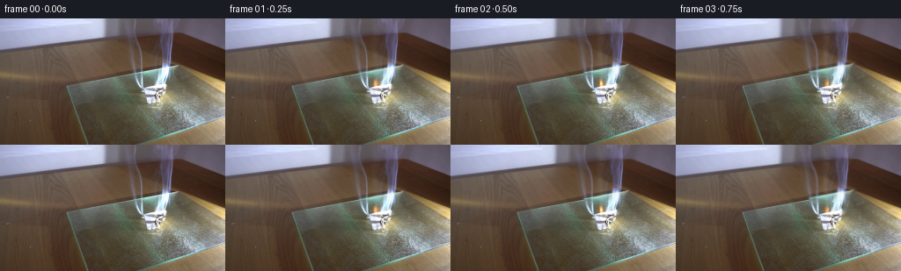
展开代码变化
--- 上一保存版本
+++ 本次保存版本
@@ -55,7 +55,7 @@
return field
-def make_smoke_sprite(source, clean):
+def make_smoke_layer(source, clean):
"""Extract the plume's translucent silhouette from the source image."""
difference = np.linalg.norm(source.astype(np.float32) - clean.astype(np.float32), axis=2)
yy, xx = np.mgrid[0:HEIGHT, 0:WIDTH].astype(np.float32)
@@ -64,14 +64,25 @@
alpha *= np.clip((yy + 1.0) / 4.0, 0.0, 1.0)
alpha *= np.exp(-0.5 * ((xx - 168.0) / 26.0) ** 2)
alpha = gaussian_filter(alpha, 0.45)
- return np.clip(alpha, 0.0, 1.0).astype(np.float32)
+ alpha = np.clip(alpha, 0.0, 1.0).astype(np.float32)
+
+ # Solve for the plume color that composites over the clean plate to form
+ # the original image. This preserves the photographed wisps at frame zero.
+ source_f = source.astype(np.float32)
+ clean_f = clean.astype(np.float32)
+ safe_alpha = np.maximum(alpha, 0.015)[..., None]
+ color = (source_f - clean_f * (1.0 - alpha[..., None])) / safe_alpha
+ neutral = np.array([225.0, 232.0, 236.0], np.float32)
+ color = np.where(alpha[..., None] > 0.015, color, neutral)
+ color = np.clip(color, 0.0, 255.0).astype(np.float32)
+ return alpha, color
def sample(field, x, y):
return map_coordinates(field, [y, x], order=1, mode="reflect")
-def render_smoke(time_s, clean, sprite):
+def render_smoke(time_s, clean, alpha_layer, color_layer):
yy, xx = np.mgrid[0:HEIGHT, 0:WIDTH].astype(np.float32)
# Start exactly on the photographed plume's placement and ease into the
# drifting state over the first second.
@@ -83,13 +94,20 @@
sx = xx + motion * (0.85 * np.sin(yy * 0.11 + time_s * 2.0) * (0.3 + height))
sx += motion * (0.25 * time_s + 0.9 * height * np.sin(time_s * 0.75 + 0.3))
sy = yy + motion * (2.8 * time_s + 0.65 * np.sin(xx * 0.13 - time_s * 1.6) * height)
- photographed = sample(sprite, sx, sy)
+ alpha_primary = sample(alpha_layer, sx, sy)
+ color_primary = np.stack(
+ [sample(color_layer[..., channel], sx, sy) for channel in range(3)], axis=-1
+ )
sx2 = xx + motion * (1.05 * np.sin(yy * 0.10 - time_s * 1.7 + 1.4))
sx2 -= motion * 0.35 * time_s
sy2 = yy + motion * (4.2 * time_s + 0.5 * np.sin(xx * 0.11 + time_s * 1.2))
- secondary = sample(sprite, sx2, sy2)
- density = np.clip(photographed * 0.82 + secondary * 0.25, 0.0, 0.92)
+ alpha_secondary = sample(alpha_layer, sx2, sy2)
+ color_secondary = np.stack(
+ [sample(color_layer[..., channel], sx2, sy2) for channel in range(3)], axis=-1
+ )
+ density = np.clip(alpha_primary * 0.80 + alpha_secondary * 0.20, 0.0, 0.92)
+ smoke_rgb = color_primary * 0.80 + color_secondary * 0.20
# Fine fresh wisps emerge from the ember and keep the bottom from looking
# like a moving still image.
@@ -102,10 +120,13 @@
fine = sample(SMOKE_NOISE_A, nx, ny)
broad = sample(SMOKE_NOISE_B, nx * 0.55 + 2.0, ny * 0.52 + 4.0)
wisp_texture = np.clip(0.12 + 0.72 * fine + 0.34 * broad, 0.0, 1.0) ** 1.6
- density += 0.22 * envelope * wisp_texture
+ fresh = 0.22 * envelope * wisp_texture * motion
+ smoke_rgb = (smoke_rgb * density[..., None] + 225.0 * fresh[..., None]) / np.maximum(
+ density + fresh, 1e-6
+ )[..., None]
+ density += fresh
density = np.clip(gaussian_filter(density, 0.32), 0.0, 0.95)
- smoke_rgb = np.array([225.0, 232.0, 236.0], np.float32)
result = clean.astype(np.float32) * (1.0 - density[..., None])
result += smoke_rgb * density[..., None]
@@ -176,7 +197,7 @@
source_bgr = cv2.imread(str(CASE_DIR / "first_frame.png"), cv2.IMREAD_COLOR)
source = cv2.cvtColor(source_bgr, cv2.COLOR_BGR2RGB)
clean = make_clean_plate(source)
- sprite = make_smoke_sprite(source, clean)
+ alpha_layer, color_layer = make_smoke_layer(source, clean)
frames = []
for index in range(FRAME_COUNT):
@@ -184,7 +205,7 @@
frames.append(source.copy())
continue
time_s = index / FPS
- frame = render_smoke(time_s, clean, sprite)
+ frame = render_smoke(time_s, clean, alpha_layer, color_layer)
frame = add_fire_and_char(frame, time_s)
frame = subtle_heat_shimmer(frame, time_s)
frames.append(np.clip(frame + 0.5, 0.0, 255.0).astype(np.uint8))
可观测工具轨迹
实际执行的命令与返回图片。
命令 1exit 0
/bin/bash -c "pwd && rg --files -g 'prompt.txt' -g 'GENERATION_RULES.md' -g 'first_frame.png' -g '"'!*.pyc'"'"
命令 2exit 0
/bin/bash -c "sed -n '1,240p' prompt.txt"
命令 3exit 0
/bin/bash -c "sed -n '1,260p' GENERATION_RULES.md"
命令 4exit 127
/bin/bash -c 'ls -la && file first_frame.png && ffprobe -v error -show_entries stream=width,height,r_frame_rate -of default=noprint_wrappers=1 first_frame.png'
命令 5exit 0
/bin/bash -c "sed -n '1,260p' artifact_io.py"
命令 6exit 0
/bin/bash -c "python - <<'PY'
from PIL import Image
im=Image.open('first_frame.png')
print(im.mode, im.size)
print(im.getbbox())
PY"命令 7exit 0
/bin/bash -c "python - <<'PY' import importlib.util for m in ['numpy','PIL','cv2','scipy','imageio','matplotlib','skimage']: print(m, bool(importlib.util.find_spec(m))) PY"
命令 8exit 0
/bin/bash -c "python - <<'PY'
from PIL import Image
im=Image.open('first_frame.png')
im.crop((100,0,230,125)).resize((520,500), Image.Resampling.NEAREST).save('.tmp/crop_nearest.png')
im.crop((100,0,230,125)).resize((780,750), Image.Resampling.LANCZOS).save('.tmp/crop_smooth.png')
PY"命令 9exit 0
/bin/bash -c "python - <<'PY'
import cv2, numpy as np
from PIL import Image
im=cv2.imread('first_frame.png')
h,w=im.shape[:2]
# broad hand-shaped smoke/flame mask
mask=np.zeros((h,w),np.uint8)
poly=np.array([[137,0],[198,0],[198,44],[205,64],[199,82],[188,83],[181,76],[172,78],[162,72],[154,67],[146,50]],np.int32)
cv2.fillPoly(mask,[poly],255)
# avoid paper and strong scene objects; keep only y<74 around paper
mask[75:,:]=0
for rad,name in [(3,'telea3'),(5,'telea5'),(9,'ns9')]:
if name.startswith('telea'):
out=cv2.inpaint(im,mask,rad,cv2.INPAINT_TELEA)
else:
out=cv2.inpaint(im,mask,rad,cv2.INPAINT_NS)
cv2.imwrite('.tmp/'+name+'.png',out)
cv2.imwrite('.tmp/mask.png',mask)
PY"命令 10exit 0
/bin/bash -c "python - <<'PY'
import cv2, numpy as np
im=cv2.imread('first_frame.png')
# inspect pixel values by coordinate at likely paper
for y in [73,75,77,79,81,83,85,87]:
print('y',y, [(x, tuple(int(v) for v in im[y,x][::-1])) for x in range(158,183,4)])
PY"命令 11exit 0
/bin/bash -c 'python generate.py'
命令 12exit 0
/bin/bash -c "python - <<'PY'
import cv2, numpy as np
from scipy.ndimage import gaussian_filter
im=cv2.cvtColor(cv2.imread('first_frame.png'),cv2.COLOR_BGR2RGB).astype(np.float32)
# read current clean plate from first frame generated function by importing
import generate
clean=generate.make_clean_plate(im.astype(np.uint8)).astype(np.float32)
# brightness relative to blurred plate, and difference from clean
lum=im.mean(2)
base=gaussian_filter(lum,8)
a=np.clip((lum-base-2)/22,0,1)
b=np.clip((im-clean).mean(2)/30,0,1)
m=np.maximum(a,b)
y,x=np.mgrid[:144,:256]
region=np.exp(-0.5*((x-170)/25)**2)*np.clip((90-y)/20,0,1)
m*=region
for k,arr in [('a',a*region),('b',b*region),('m',m)]:
out=(np.clip(arr,0,1)*255).astype(np.uint8)
cv2.imwrite('.tmp/alpha_'+k+'.png',out)
# composite gray white
rgb=im*(1-m[...,None])+np.array([225,232,236])*m[...,None]
cv2.imwrite('.tmp/extracted_smoke.png',cv2.cvtColor(rgb.astype(np.uint8),cv2.COLOR_RGB2BGR))
PY"命令 13exit 0
/bin/bash -c "python - <<'PY'
import cv2, numpy as np
from scipy.ndimage import gaussian_filter
import generate
src=cv2.cvtColor(cv2.imread('first_frame.png'),cv2.COLOR_BGR2RGB).astype(np.float32)
clean=generate.make_clean_plate(src.astype(np.uint8)).astype(np.float32)
d=np.linalg.norm(src-clean,axis=2)
for q in [5,10,20,30,40,50,60,80,100]: print(q,np.percentile(d[:80,120:210],q))
a=np.clip(d/55,0,1)
a=gaussian_filter(a,0.45)
# remove lower paper/flame area, keep only smoke above fold
Y,X=np.mgrid[:144,:256]
a*=np.clip((74-Y)/5,0,1)
a*=np.clip((Y+2)/6,0,1)
# paper polygon clear
poly=np.array([[155,67],[190,65],[190,94],[155,94]],np.int32)
mask=np.zeros((144,256),np.uint8);cv2.fillPoly(mask,[poly],1);a*=1-mask
# compare diff vs luminance
cv2.imwrite('.tmp/diff.png',np.clip(d*3,0,255).astype(np.uint8))
cv2.imwrite('.tmp/sprite_alpha.png',(a*255).astype(np.uint8))
out=clean*(1-a[...,None])+np.array([224,231,235])*a[...,None]
cv2.imwrite('.tmp/sprite_preview.png',cv2.cvtColor(out.astype(np.uint8),cv2.COLOR_RGB2BGR))
PY"命令 14exit 0
/bin/bash -c "python - <<'PY'
import cv2, numpy as np
from scipy.ndimage import gaussian_filter
import generate
src=cv2.cvtColor(cv2.imread('first_frame.png'),cv2.COLOR_BGR2RGB).astype(np.float32)
clean=generate.make_clean_plate(src.astype(np.uint8)).astype(np.float32)
d=np.linalg.norm(src-clean,axis=2)
Y,X=np.mgrid[:144,:256]
a=np.clip((d-1.5)/34,0,1)
a*=np.clip((80-Y)/9,0,1)*np.clip((Y+2)/5,0,1)
a*=np.exp(-0.5*((X-168)/25)**2)
a=gaussian_filter(a,0.65)
cv2.imwrite('.tmp/sprite_alpha2.png',(a*255).astype(np.uint8))
out=clean*(1-a[...,None])+np.array([224,231,235])*a[...,None]
cv2.imwrite('.tmp/sprite_preview2.png',cv2.cvtColor(out.astype(np.uint8),cv2.COLOR_RGB2BGR))
PY"命令 15exit 0
/bin/bash -c "python - <<'PY'
import cv2, numpy as np
from scipy.ndimage import gaussian_filter, map_coordinates
import generate
src=cv2.cvtColor(cv2.imread('first_frame.png'),cv2.COLOR_BGR2RGB).astype(np.float32)
clean=generate.make_clean_plate(src.astype(np.uint8)).astype(np.float32)
d=np.linalg.norm(src-clean,axis=2)
Y,X=np.mgrid[:144,:256].astype(np.float32)
alpha=np.clip((d-1.2)/38,0,1)
alpha*=np.clip((80-Y)/8,0,1)*np.clip((Y+1)/4,0,1)
alpha*=np.exp(-0.5*((X-168)/26)**2)
alpha=gaussian_filter(alpha,0.45)
# smoke-only source color represented by neutral pale gray, avoid paper residue
smoke_color=np.array([224,231,235],np.float32)
for idx in [1,5,10,19]:
t=idx/4
sx=X+0.9*np.sin(Y*0.12+t*2.2)+0.25*t
sy=Y+2.5*t+0.7*np.sin(X*0.14-t*1.7)
a1=map_coordinates(alpha,[sy,sx],order=1,mode='constant',cval=0)
sx2=X+1.1*np.sin(Y*0.10-t*1.9+1.7)-0.3*t
sy2=Y+3.4*t+0.5*np.sin(X*0.12+t*1.4+2.0)
a2=map_coordinates(alpha,[sy2,sx2],order=1,mode='constant',cval=0)
a=np.clip(a1*0.78+a2*0.34,0,0.95)
# preserve thin source base
base=np.clip(1.5-0.22*Y,0,1)*np.exp(-0.5*((X-(171.5-0.7*t))/1.7)**2)
a=np.maximum(a,0.38*base)
a=gaussian_filter(a,0.25)
out=clean*(1-a[...,None])+smoke_color*a[...,None]
cv2.imwrite(f'.tmp/cand_{idx:02d}.png',cv2.cvtColor(np.clip(out,0,255).astype(np.uint8),cv2.COLOR_RGB2BGR))
PY"命令 16exit 0
/bin/bash -c 'python generate.py'
命令 17exit 0
/bin/bash -c "python - <<'PY'
from PIL import Image, ImageDraw
indices=[0,1,3,5,8,10,13,16,19]
ims=[Image.open(f'frames/{i:02d}.png').crop((125,45,210,105)).resize((340,240),Image.Resampling.LANCZOS) for i in indices]
sheet=Image.new('RGB',(340*3,(240+20)*3),(24,27,32)); d=ImageDraw.Draw(sheet)
for j,(i,im) in enumerate(zip(indices,ims)):
x=(j%3)*340;y=(j//3)*260
d.text((x+5,y+3),f'frame {i:02d}',fill='white');sheet.paste(im,(x,y+20))
sheet.save('.tmp/closeups.png')
PY"命令 18exit 0
/bin/bash -c "python - <<'PY'
import cv2, numpy as np
for i in [0,1,5,10,19]:
im=cv2.imread(f'frames/{i:02d}.png')
patch=im[62:91,158:190]
print(i, 'paper mean', patch.reshape(-1,3).mean(0)[::-1].round(1), 'max', patch.reshape(-1,3).max(0)[::-1])
PY"命令 19exit 0
/bin/bash -c "python - <<'PY'
from pathlib import Path
import numpy as np
from PIL import Image
p=Path('pixels.npz'); z=np.load(p)
print(z['pixels'].shape,z['pixels'].dtype)
print('frame files',len(list(Path('frames').glob('*.png'))))
print('index',Path('index.html').stat().st_size)
a=np.asarray(Image.open('frames/00.png')); b=np.asarray(Image.open('first_frame.png'))
print('exact first frame',np.array_equal(a,b))
for f in ['task_spec.json','pixels.npz','index.html','inspection.png','transition_check.png']:
print(f,Path(f).exists(),Path(f).stat().st_size if Path(f).exists() else '-')
PY"命令 20exit 0
/bin/bash -c "python - <<'PY'
import numpy as np, cv2
frames=[cv2.imread(f'frames/{i:02d}.png').astype(np.float32) for i in range(20)]
for i in range(1,20):
d=np.abs(frames[i]-frames[i-1]).mean(axis=2)
print(f'{i:02d}: changed={np.mean(d>1):.3f} mean={d.mean():.2f} p95={np.percentile(d,95):.1f}')
PY"命令 21exit 0
/bin/bash -c "python generate.py && python - <<'PY'
import numpy as np, cv2
frames=[cv2.imread(f'frames/{i:02d}.png').astype(np.float32) for i in range(20)]
for i in range(1,6):
d=np.abs(frames[i]-frames[i-1]).mean(axis=2)
print(f'{i:02d}: changed={np.mean(d>1):.3f} mean={d.mean():.2f} p95={np.percentile(d,95):.1f}')
print('exact first frame',np.array_equal(cv2.imread('frames/00.png'),cv2.imread('first_frame.png')))
PY"命令 22exit 0
/bin/bash -c "python - <<'PY'
import cv2,numpy as np
A=cv2.imread('frames/00.png').astype(float);B=cv2.imread('frames/01.png').astype(float)
D=np.abs(A-B).mean(2)
# top diff locations by regions
for name,(x1,y1,x2,y2) in {'smoke':(120,0,215,70),'paper':(150,65,195,95),'glass':(80,95,215,125),'wood':(0,0,256,144)}.items():
d=D[y1:y2,x1:x2]; print(name,d.mean(),d.max(),np.mean(d>10),np.percentile(d,[50,90,99]))
cv2.imwrite('.tmp/d01.png',np.clip(D*8,0,255).astype(np.uint8))
PY"命令 23exit 0
/bin/bash -c "python - <<'PY'
import cv2,numpy as np
src=cv2.imread('first_frame.png')
for i in range(1,5):
im=cv2.imread(f'frames/{i:02d}.png')
a=src.astype(float);b=im.astype(float)
for name,(x1,y1,x2,y2) in {'smoke':(120,0,215,70),'paper':(150,65,195,95)}.items():
d=np.abs(a[y1:y2,x1:x2]-b[y1:y2,x1:x2]).mean(2)
print(i,name,round(d.mean(),2),np.percentile(d,[50,90,99]).round(1))
PY"命令 24exit 0
/bin/bash -c "python - <<'PY'
import cv2,numpy as np, generate
src=cv2.cvtColor(cv2.imread('first_frame.png'),cv2.COLOR_BGR2RGB)
clean=generate.make_clean_plate(src); sprite=generate.make_smoke_sprite(src,clean)
out=generate.render_smoke(0,clean,sprite)
cv2.imwrite('.tmp/zero_smoke.png',cv2.cvtColor(np.clip(out,0,255).astype(np.uint8),cv2.COLOR_RGB2BGR))
print('diff from source',np.abs(out-src).mean())
PY"命令 25exit 0
/bin/bash -c "python generate.py && python - <<'PY'
import cv2,numpy as np
frames=[cv2.imread(f'frames/{i:02d}.png').astype(np.float32) for i in range(20)]
for i in range(1,5):
d=np.abs(frames[i]-frames[i-1]).mean(axis=2)
print(f'{i:02d}: changed={np.mean(d>1):.3f} mean={d.mean():.2f} p95={np.percentile(d,95):.1f}')
print('exact first frame',np.array_equal(cv2.imread('frames/00.png'),cv2.imread('first_frame.png')))
PY"命令 26exit 0
/bin/bash -c "python - <<'PY'
import cv2,numpy as np
A=cv2.imread('frames/00.png').astype(float);B=cv2.imread('frames/01.png').astype(float)
D=np.abs(A-B).mean(2)
for y in range(0,80,10):
print(y, round(D[y:y+10,120:215].mean(),2), round(D[y:y+10,120:215].max(),1))
PY"命令 27exit 0
/bin/bash -c "python - <<'PY'
from pathlib import Path
import shutil
for name in ['frames','pixels.npz','index.html','inspection.png','transition_check.png']:
p=Path(name)
if p.is_dir(): shutil.rmtree(p)
elif p.exists(): p.unlink()
PY
python generate.py
python - <<'PY'
from pathlib import Path
import numpy as np, cv2
z=np.load('pixels.npz')['pixels']
assert z.shape==(144,256,20)
assert len(list(Path('frames').glob('*.png')))==20
src=cv2.imread('first_frame.png')
f0=cv2.imread('frames/00.png')
assert np.array_equal(src,f0)
print('artifact valid:',z.shape,z.dtype,'frame00 exact:',np.array_equal(src,f0))
print('html bytes:',Path('index.html').stat().st_size)
PY"视觉工具实际返回图片 1

视觉工具实际返回图片 2
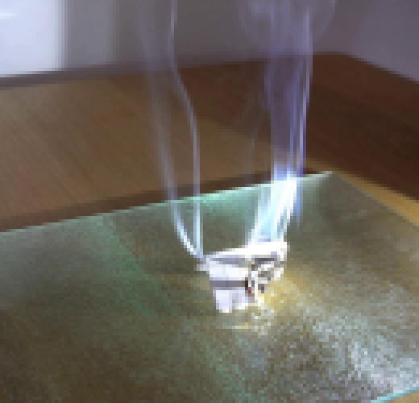
视觉工具实际返回图片 3
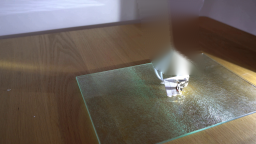
视觉工具实际返回图片 4
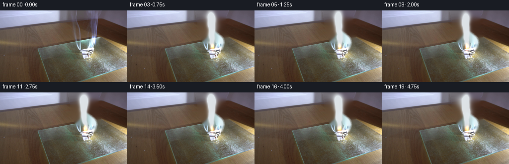
视觉工具实际返回图片 5
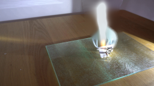
视觉工具实际返回图片 6
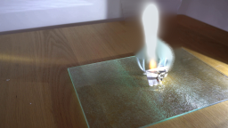
视觉工具实际返回图片 7
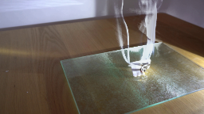
视觉工具实际返回图片 8
视觉工具实际返回图片 9
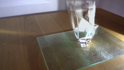
视觉工具实际返回图片 10
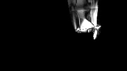
视觉工具实际返回图片 11
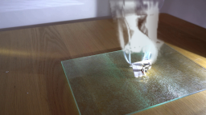
视觉工具实际返回图片 12
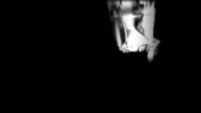
视觉工具实际返回图片 13
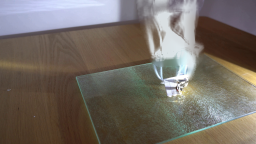
视觉工具实际返回图片 14

视觉工具实际返回图片 15
视觉工具实际返回图片 16

视觉工具实际返回图片 17
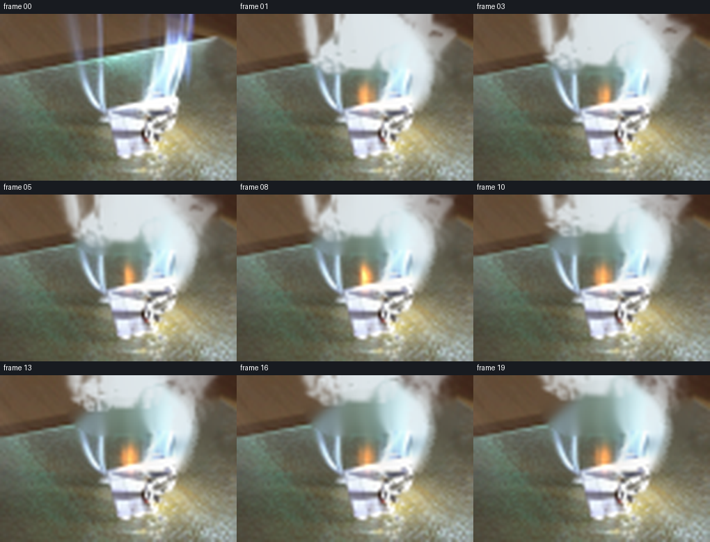
视觉工具实际返回图片 18
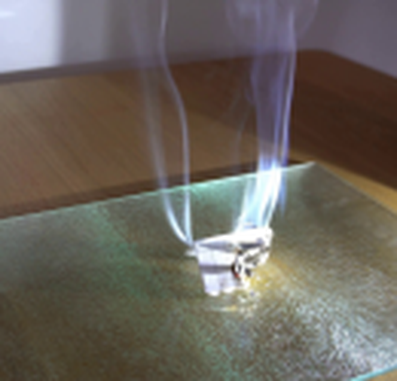
视觉工具实际返回图片 19
视觉工具实际返回图片 20
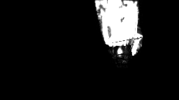
视觉工具实际返回图片 21
视觉工具实际返回图片 22
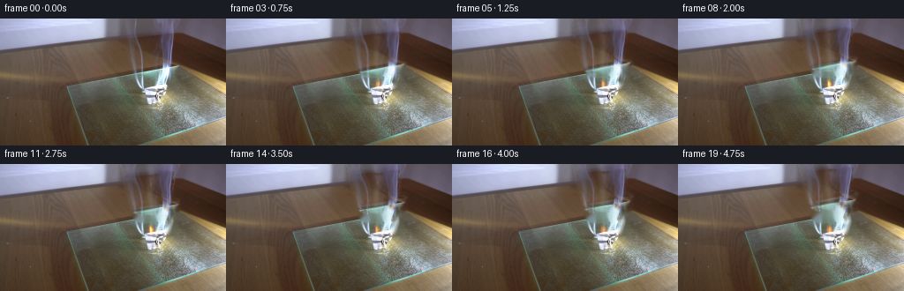
视觉工具实际返回图片 23
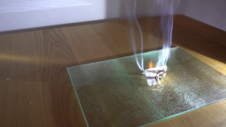
视觉工具实际返回图片 24

保存候选 4 份；完成命令 27 次；可验证图片返回 24 张。原始 API 响应与完整日志保留在本地。